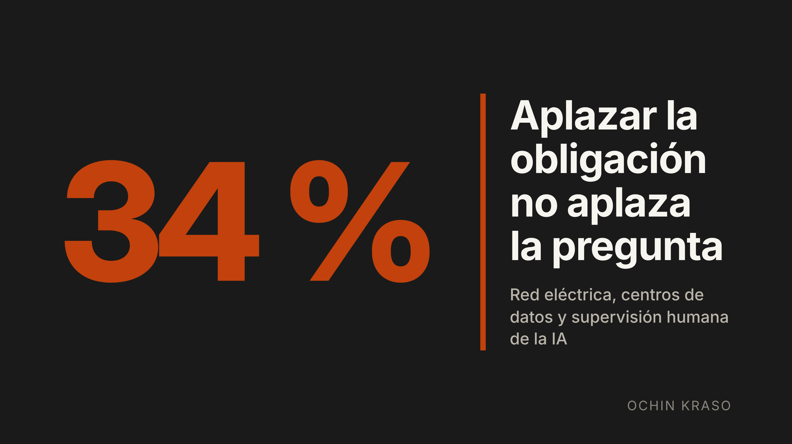

Aplazar la obligación no aplaza la pregunta
Los centros de datos ya tienen reservado un tercio del acceso a la red y la supervisión humana de la IA se aplaza a 2027 o 2028. En los dos casos falta lo mismo.

Un tercio de la red, ninguna instalación en marcha
Los centros de datos concentran el 34 % del acceso a la red eléctrica concedido en España. Son 6.328 MW de un total de 18,52 GW, según el mapa de Red Eléctrica a 1 de octubre. Ninguna de esas instalaciones ha entrado todavía en servicio. [PENDIENTE: año del mapa y enlace a la fuente]
El territorio ya está respondiendo
En Aragón, el Ayuntamiento de Villanueva de Gállego ha recurrido ante los tribunales el plan que autoriza el proyecto de Amazon. Colectivos vecinales y ecologistas presentaron alegaciones en enero contra los de Microsoft. [PENDIENTE: fuente del recurso y de las alegaciones]
La supervisión humana, aplazada
Mientras tanto, la supervisión humana que exige el Reglamento europeo de IA para los sistemas de alto riesgo se aplaza. El Ómnibus Digital, en vigor desde el 27 de julio, la pasa a diciembre de 2027 o agosto de 2028, según el caso. [PENDIENTE: qué sistemas van a cada fecha y enlace al texto oficial]
Lo que falta en los dos casos
Mi lectura: en los dos asuntos falta lo mismo. Un criterio escrito. Quién decide, con qué límites y quién responde si algo falla.
Aplazar la obligación no aplaza la pregunta.
Una plantilla para no esperar a la norma
Si en tu organización ya hay agentes funcionando, este es el mínimo que debería estar escrito:
| Quién decide | Nombre y cargo |
|---|---|
| Con qué límites | Qué hace solo y qué valida una persona |
| Quién responde | Quién da la cara si falla |
| Cuándo se revisa | Fecha o hecho que lo activa |
[PENDIENTE: desarrollar este apartado si quieres que el artículo vaya más allá del post]
Te pregunto
¿Quién decide en tu organización cuánta supervisión humana necesita un agente, antes de que lo exija la norma? Respóndeme a este correo o déjalo en los comentarios.
¿Te lo han reenviado? Suscríbete para recibir el próximo.
Suscribirse